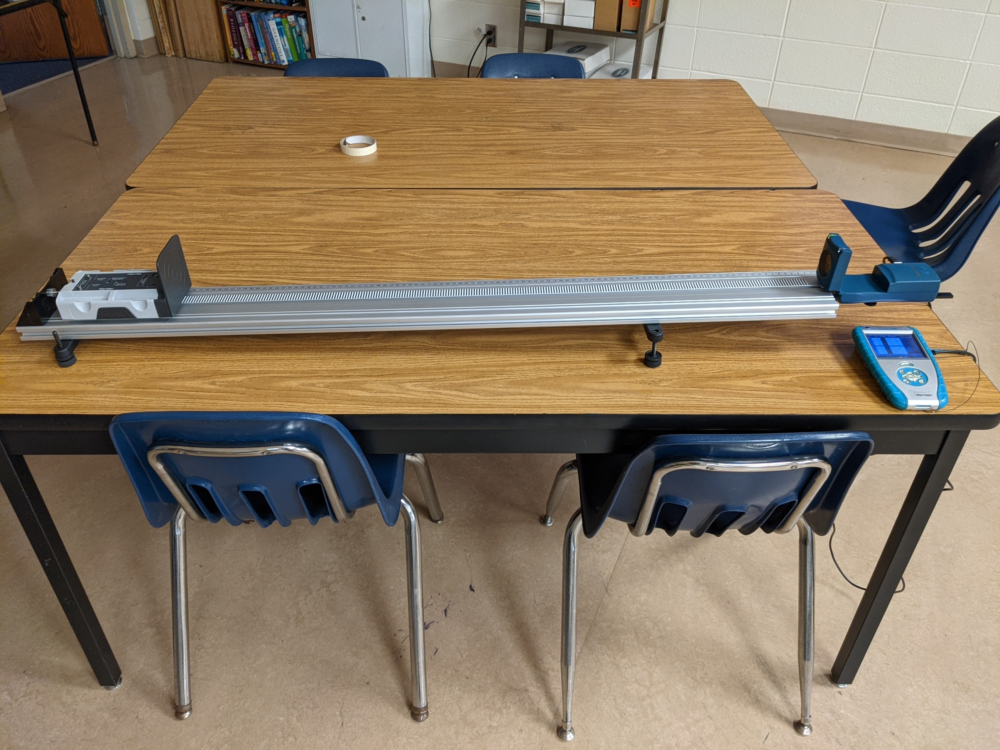
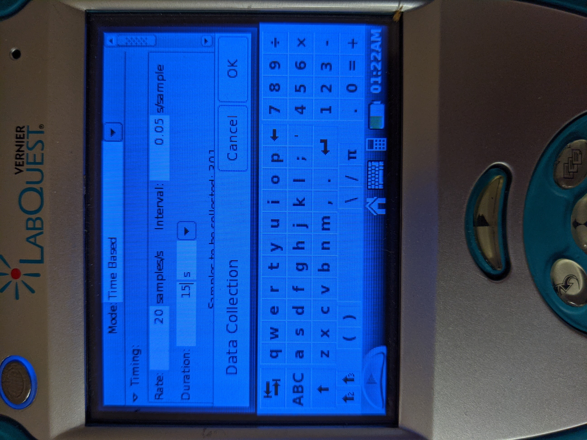

- Get Equipment
- Track
- Cart
- Endstop
- Track Feet
- Cart Flag
- Motion Detector
- Motion Detector Bracket
- LabQuest
- Set up the equipment as seen in the picture

- On the main screen of the LabQuest, click the box that says 'Mode' at the top

- Set the time to 15 seconds

- Click okay
- Hold the cart around 40 cm away from the motion detector.
- Press play
- As soon as you hear the clicking, release the cart down the ramp
Go Back